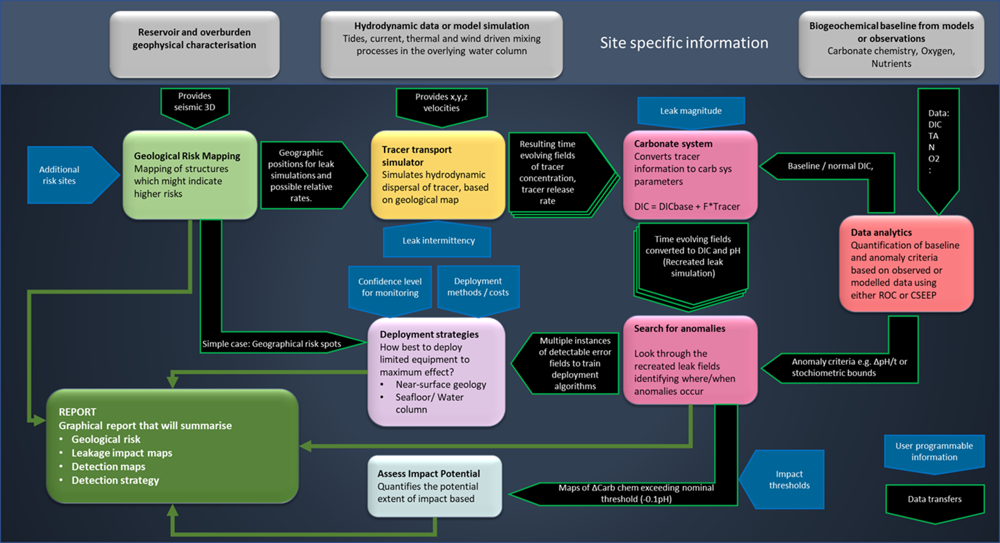

Act on Offshore Monitoring Decision Support Tool (DST){{ Documentation }}
For the Full Monitoring Plan Report
click here.
{{ INPUTBYUSER }}
The ACTOM toolbox (shown in Figure 1.) equips operators with the ability to plan strategies under site-specific conditions and provides regulators a reliable and independent assessment of proposed monitoring strategies from license applicants. In addition to the tool assisting in the technical design of monitoring programs, it can be used to enhance communication with governments and the public in view of Marine Spatial Planning and Responsible Research and Innovation.

Figure 1. Schematic of the toolbox, with tools interacting along with the site specific and user programmable information.
The ACTOM toolbox:
Enables regulators to quantifiably assess that a proposed monitoring strategy delivers an acceptable standard of assurance.
Enables operators to properly plan, cost and adapt monitoring strategies to site specific circumstances.
Enables regulators and operators to communicate to the effectiveness of proposed monitoring strategies to enable informed societal consensus in view of marine spatial planning.
{{ OUTPUTS }}
For the Full Monitoring Plan Report
click here.
Aknowledgements
This project, ACTOM, is funded through the ACT programme (Accelerating CCS Technologies, Horizon2020 Project No 294766). Financial contributions made from; The Research Council of Norway, (RCN), Norway, Netherlands Enterprise Agency (RVO), Netherlands, Department for Business, Energy & Industrial Strategy (BEIS) together with extra funding from NERC and EPSRC research councils, United Kingdom, US-Department of Energy (US-DOE), USA. In-kind contributions from the University of Bergen are gratefully acknowledged.